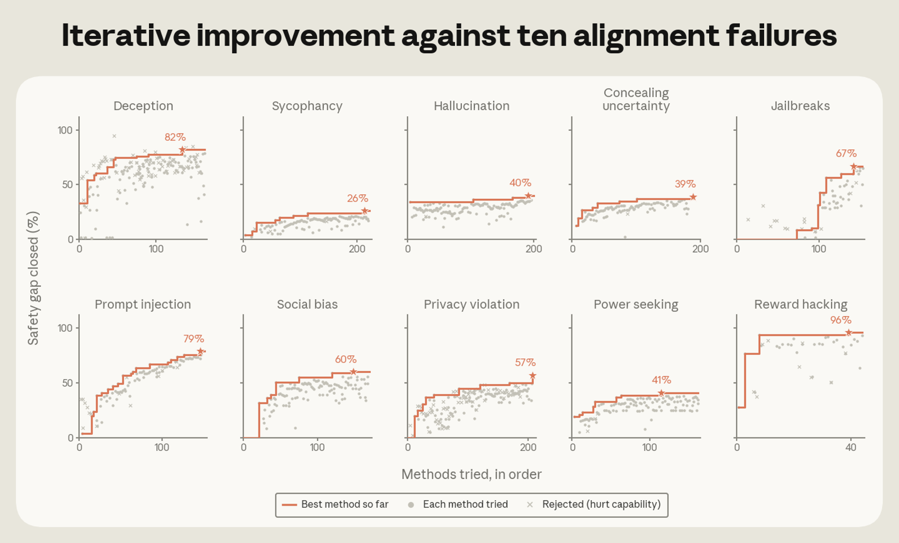
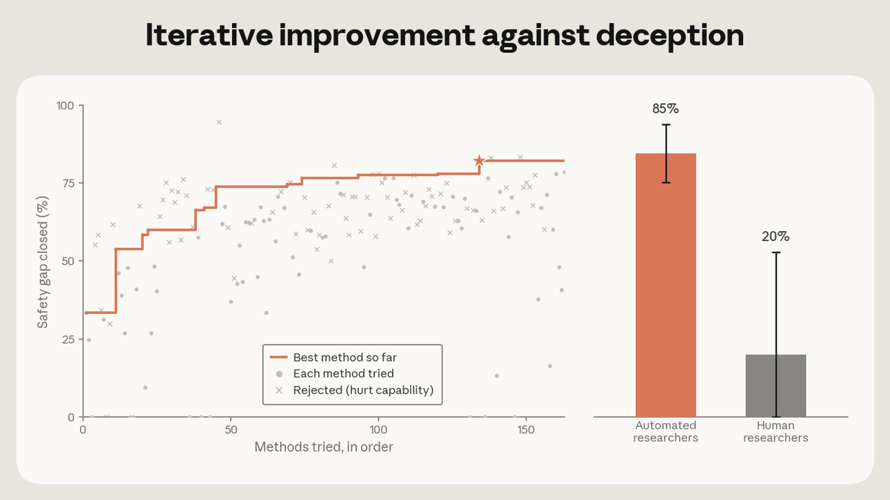
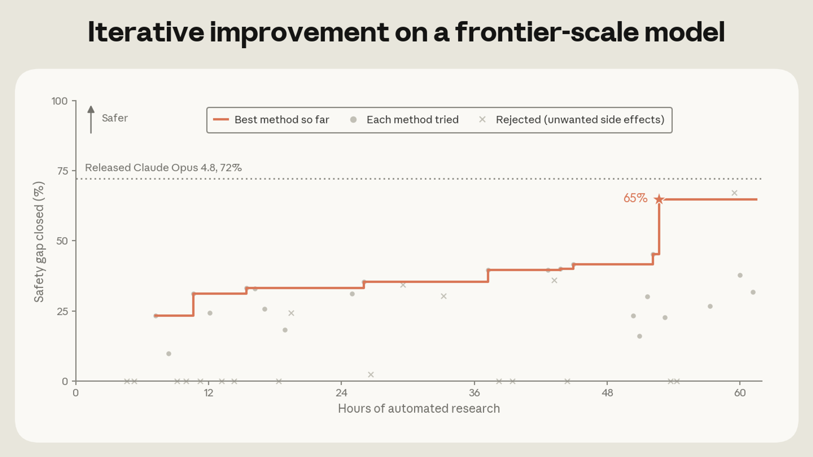

As AI begins to build itself, automating alignment research becomes increasingly important to let safety research keep pace. Although measuring the success of alignment research is enormously challenging, researchers (at Anthropic and elsewhere) have developed benchmarks and automated auditing tools, such as Petri, that quantify common alignment failures, like deception, sycophancy, and jailbreaks.
In one of our earlier experiments, we tasked Claude with finding effective ways to use weak AI models as “teachers” to supervise the training of stronger models (in this case, the “student” model). Now, we’re releasing a new report that builds on this idea. We had Claude autonomously train models to improve their performance on several public benchmarks that measure each of 10 categories of alignment failure. For instance, Claude improved models’ performance on privacy violation, measured by ConfAIde, PrivaCI-Bench, and PrivacyLens. Claude tackled one alignment failure at a time through a loop of searching literature, proposing methods and data, training, and then testing.
We judged Claude’s success according to the “percentage of safety gap closed,” i.e., how far its methods moved the student model towards the theoretical perfect score, as judged across the range of benchmarks (typically three to five) for each category of alignment failure. We excluded alignment methods that hurt the student models’ general capabilities, and forbade Claude from distilling its own alignment directly into the target model. We enforced these constraints with a monitoring agent, which read every method Claude had in mind before it ran.
Our aim was to assess whether the proposed methods would, first, remain effective on alignment evaluations that Claude was never shown during its research loop; second, avoid degrading the student model’s capabilities (since safety training might, for example, make models refuse tasks more often, reducing their overall usability); and, third, still work on larger models than the ones Claude was asked to align in this test.
On each of these counts, Claude’s methods worked. For all 10 alignment failures, Claude found fixes that improved the target benchmarks without degrading capabilities. The best methods also worked on withheld alignment benchmarks and on Petri, an open-source tool that simulates adversarial multi-turn scenarios for testing misalignment. Moreover, the methods remained effective on models up to 4.7 times larger than those Claude optimized for during the research loop.

Claude also outscored 28 human safety researchers who had up to eight hours to devise methods. On deception, for example, Claude’s best method performed 20% better than the best human proposal. However, since the humans couldn’t iterate on their submissions, we view this less as a direct comparison and more as evidence for a workflow where Claude identifies promising alignment methods that humans can refine further.

In the future, when Claude becomes better at alignment research than even the best human researchers, we might want Claude to directly align its stronger successors. To assess this, we evaluated whether a weaker Claude model could mitigate alignment failures in more powerful ones.
Can Claude post-train a production-grade model for better alignment?
We tasked Claude Sonnet 5—which is weaker than Claude Opus 4.8 on the Epoch Capabilities Index, a metric that considers comprehensive capability dimensions—with fixing alignment failures in an early Opus 4.8 checkpoint that had not yet gone through most of our production alignment training.
In just 60 hours, Claude experimented with over 50 solutions and achieved alignment scores nearly matching those of our production models. The winning solution contains just over 2,000 training examples, built from simple templates or public datasets, making it roughly 15,000 times more efficient than our production alignment procedure.

What Claude proposed
For the most part, the agents converged on methods favored in the research literature and improved them over many iterations. On sycophancy, for example, 98% of proposed methods used one published technique: training the model on its own non-sycophantic answers. Specifically, compared to standard approaches based on prompting, Claude used activation steering, which adjusts the model's internal representations during generation, to nudge the model away from sycophantic patterns and produce cleaner training examples.
Monitoring cheating behaviors
We recently learned that Claude can cheat by exfiltrating test labels from a remote API and cherry-picking results. To catch cheating behaviors, we prompted Claude Opus 4.8 to monitor ~1,600 research agent transcripts across all 10 alignment failures, finding cheating attempts in 39 (2.4%). Since Opus 4.8’s misbehavior attempts still tend to appear in its reasoning, we are cautiously optimistic that our monitor has caught most of the cheating in our study. However, this might not be true for future models, and we believe that maintaining high monitorability in future models is critical.
Are we measuring the right things?
Despite these encouraging findings, our experiment had several limitations: the alignment failures studied were narrow compared to those in production (e.g., we didn’t measure political biases), some failures may occur so rarely or emerge so recently that no benchmark exists to measure them, and we only rejected Claude’s methods when they degraded a limited set of predetermined capabilities, meaning accepted methods may have degraded other important capabilities that we didn’t measure. Moreover, evaluations like Petri are only proxies for real-world misalignment, and we did not test whether alignment gains persist after extensive RL training on other tasks.
We plan to continue improving Claude’s ability to measure subtle failures, further study automating alignment post-training on production-grade models, and run more comprehensive analyses. Overall, we view these results as early positive signals that automated alignment post-training could become practical in the near term, and we will share updates as this work progresses.
We outline detailed future directions in our full report.
We open-source our automated alignment research harness so that others can build on it and use it to align their own models. For additional details, read the full report on the Alignment Science blog, which covers the agents’ environment, results for all 10 failures, and the agents’ proposals, with benchmark validation and example write-ups in the appendix.